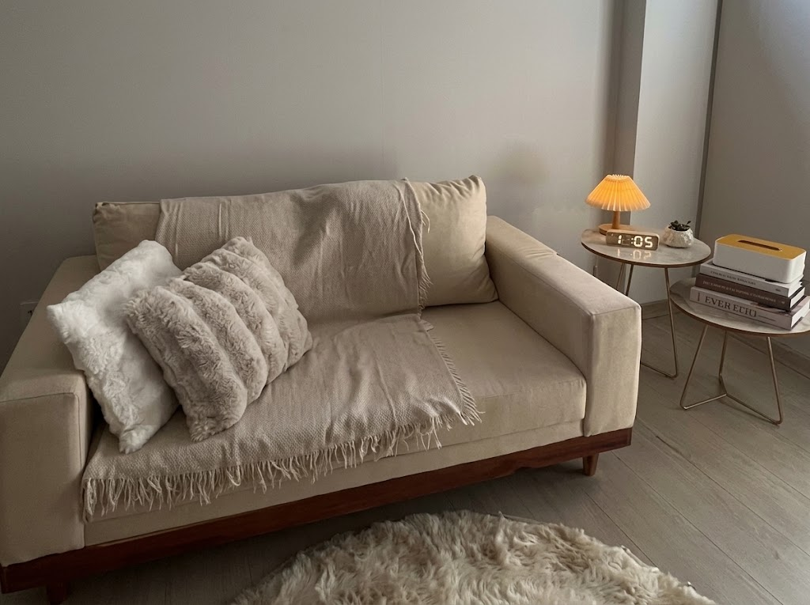
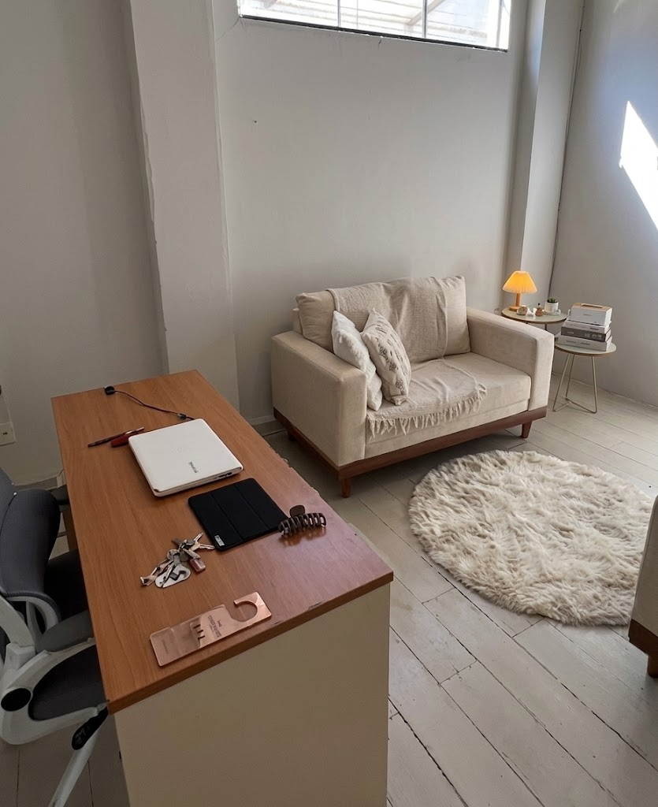
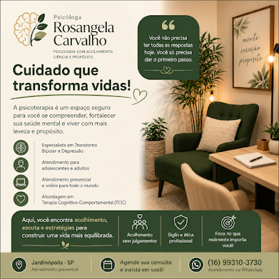

Rosângela Carvalho
Cuidado que transforma vidas!
Cuidar da saúde mental também é um ato de coragem. Na terapia, você encontra um espaço seguro para compreender suas emoções, tratar a depressão e estabilizar o transtorno bipolar através da Terapia Cognitivo-Comportamental.
Ciência & Acolhimento
Terapia Cognitivo-Comportamental
Rosângela Carvalho
Psicóloga CRP 06/161414
Rosângela
Carvalho • Psicóloga
Sua saúde mental tratada com acolhimento, ciência e propósito.
Cuidar da saúde mental também é um ato de coragem. Na terapia, você encontra um espaço seguro para falar sobre o que sente, compreender suas emoções e desenvolver estratégias práticas para enfrentar os desafios do dia a dia.
Sou Rosângela Carvalho (CRP 06/161414), psicóloga focada no acompanhamento especializado em Transtorno Bipolar e Depressão, utilizando a Terapia Cognitivo-Comportamental (TCC) como principal abordagem terapêutica.
Atendo adolescentes e adultos de forma presencial em meu consultório em Jardinópolis/SP e também através de consultas online para todo o Brasil e o mundo. Se você sente que chegou a hora de cuidar de você, será um prazer caminhar ao seu lado.
Espaço Seguro & Sem Julgamentos
Escuta ativa, sigilo ético absoluto e acolhimento pautado pelo respeito à sua história de vida.
Estratégias Práticas (TCC)
Ferramentas fundamentadas na ciência para manejar oscilações de humor, ansiedade e pensamentos.
Foco em Transtorno Bipolar, Depressão e TCC
Tratamentos e acompanhamento terapêutico estruturados para adolescentes e adultos, oferecendo suporte em momentos desafiadores.
Transtorno Bipolar
Acompanhamento especializado para auxílio no manejo de oscilações de humor (mania/hipomania e depressão), identificação precoce de gatilhos, psicoeducação e construção de rotinas de estabilização.
Agendar ConsultaTratamento para Depressão
Espaço de acolhimento para superação do desânimo, tristeza profunda, desmotivação e perda de sentido. Reestruturação cognitiva e resgate gradual do bem-estar e da vitalidade.
Saiba MaisTerapia Cognitivo-Comportamental (TCC)
Abordagem estruturada e focada no presente que identifica pensamentos disfuncionais, desenvolve reflexões mais realistas e ensina estratégias comportamentais eficientes para a vida cotidiana.
Conhecer AbordagemAtendimento a Adolescentes
Suporte psicológico especializado nas fases de transição e descobertas da juventude, ajudando a lidar com pressões sociais, regulação emocional, ansiedade acadêmica e fortalecimento da identidade.
Agendar HorárioAtendimento a Adultos
Psicoterapia individual focada em autoconhecimento, resolução de conflitos pessoais e profissionais, controle de ansiedade, estresse e construção de relacionamentos mais saudáveis.
Agendar ConsultaModalidade Presencial & Online
Atendimento presencial em Jardinópolis/SP com todo o conforto e ambiente silencioso, ou sessões online via videochamada com flexibilidade de horários para pacientes de qualquer lugar.
Falar no WhatsAppAcolhimento & Propósito
Conheça o material institucional, fotos e ambiente de atendimento da Psicóloga Rosângela Carvalho.



Por que escolher o acompanhamento com Rosângela Carvalho?
Um processo terapêutico construído com responsabilidade técnica, sensibilidade humana e acompanhamento próximo.
Acolhimento Sem Julgamentos
Espaço livre de pressões e preconceitos para falar abertamente sobre dores, angústias e sentimentos.
Sigilo & Ética Profissional
Compromisso total com o Código de Ética Profissional do Psicólogo (CRP 06/161414) e proteção de dados.
Foco no que Realmente Importa
Atenção individualizada às suas necessidades específicas para construir uma vida com mais leveza e equilíbrio.
Facilidade de Contato
Agendamento simplificado diretamente pelo WhatsApp (16) 99310-3730 para rápida resposta.
Relatos de Acolhimento & Transformação
Depoimentos de pacientes acompanhados pela Psicóloga Rosângela Carvalho.
"A terapia com a Rosângela foi um divisor de águas no meu diagnóstico de Transtorno Bipolar. Aprendi a reconhecer minhas mudanças de humor e hoje vivo com muito mais estabilidade."
"Fiz o acompanhamento para depressão de forma online e me surpreendi com a atenção e o acolhimento da Rosângela. Me ajudou a recuperar a vontade de fazer meus projetos."
"O atendimento presencial em Jardinópolis é excelente. A abordagem da TCC traz exercícios práticos que me ajudaram a controlar a ansiedade e os pensamentos acelerados."
Perguntas Frequentes
Esclareça suas dúvidas sobre o acompanhamento psicoterapêutico e modalidades de atendimento.
Fale com a Rosângela Carvalho
Entre em contato para agendar sua consulta presencial em Jardinópolis/SP ou online de onde você estiver.
Atendimento Presencial
Jardinópolis - SP
Atendimento presencial em consultório acolhedor
WhatsApp / Agendamentos
Registro Profissional
Psicóloga Rosângela Carvalho - CRP 06/161414